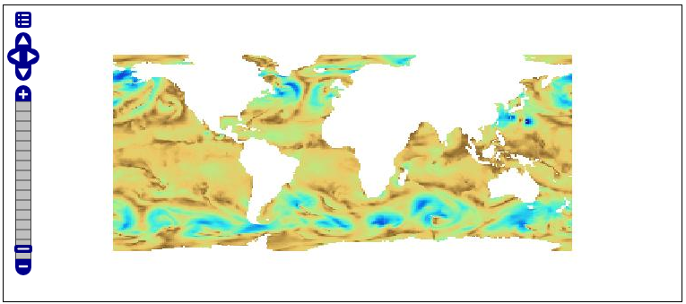

Dynamic colormap generation¶
ras:DynamicColorMap is a Raster-to-Raster rendering transformation
which applies a dynamic color map to a Raster on top of its statistics and a set of colors.
Installing the dynamic colormap community extension¶
Download the extension from the nightly GeoServer community module builds.
Warning
Make sure to match the version of the extension to the version of the GeoServer instance!
Extract the contents of the archive into the
WEB-INF/libdirectory of the GeoServer installation.
Usage¶
The following SLD invokes a Dynamic Color Map rendering transformation on a Coverage using colorMaps created on top of QuantumGIS SVG files. Dynamic Color Map Rendering Transformation takes data as first parameter (the coverage) and ColorRamp as second parameter which is a colorMap.
1 2 3 4 5 6 7 8 9 10 11 12 13 14 15 16 17 18 19 20 21 22 23 24 25 26 27 28 29 30 31 32 33 34 35 36 37 38 | <?xml version="1.0" encoding="ISO-8859-1"?>
<StyledLayerDescriptor version="1.0.0"
xsi:schemaLocation="http://www.opengis.net/sld StyledLayerDescriptor.xsd"
xmlns="http://www.opengis.net/sld"
xmlns:ogc="http://www.opengis.net/ogc"
xmlns:xlink="http://www.w3.org/1999/xlink"
xmlns:xsi="http://www.w3.org/2001/XMLSchema-instance">
<NamedLayer>
<Name>DynamicColorMap</Name>
<UserStyle>
<Title>DynamicColorMap</Title>
<Abstract>A DynamicColorMap</Abstract>
<FeatureTypeStyle>
<Transformation>
<ogc:Function name="ras:DynamicColorMap">
<ogc:Function name="parameter">
<ogc:Literal>data</ogc:Literal>
</ogc:Function>
<ogc:Function name="parameter">
<ogc:Literal>colorRamp</ogc:Literal>
<ogc:Function name="colormap">
<ogc:Literal>gmt\GMT_panoply</ogc:Literal>
<ogc:Function name="gridCoverageStats"><ogc:Literal>minimum</ogc:Literal></ogc:Function>
<ogc:Function name="gridCoverageStats"><ogc:Literal>maximum</ogc:Literal></ogc:Function>
</ogc:Function>
</ogc:Function>
</ogc:Function>
</Transformation>
<Rule>
<Name>rule1</Name>
<RasterSymbolizer>
<Opacity>1.0</Opacity>
</RasterSymbolizer>
</Rule>
</FeatureTypeStyle>
</UserStyle>
</NamedLayer>
</StyledLayerDescriptor>
|
Key aspects of the SLD are:
Lines 14-15 define the rendering transformation, using the process
ras:DynamicColorMap.Lines 16-18 supply the input data parameter, named
datain this process.Lines 19-21 supply a value for the process’s
colorRampparameter which specifies a colorMap.Lines 22-23 supply the value for the
colorMapparameter. In this case it’s a reference to a SVG containing a LinearGradient definition.A sample of QuantumGIS SVG LinearGradient subelement is:
<linearGradient id="GMT_panoply" gradientUnits="objectBoundingBox" spreadMethod="pad" x1="0%" x2="100%" y1="0%" y2="0%"> <stop offset="0.00%" stop-color="rgb(4,14,216)" stop-opacity="1.0000"/> <stop offset="6.25%" stop-color="rgb(4,14,216)" stop-opacity="1.0000"/> <stop offset="6.25%" stop-color="rgb(32,80,255)" stop-opacity="1.0000"/> <stop offset="12.50%" stop-color="rgb(32,80,255)" stop-opacity="1.0000"/> <stop offset="12.50%" stop-color="rgb(65,150,255)" stop-opacity="1.0000"/> <stop offset="18.75%" stop-color="rgb(65,150,255)" stop-opacity="1.0000"/> <stop offset="18.75%" stop-color="rgb(109,193,255)" stop-opacity="1.0000"/> <stop offset="25.00%" stop-color="rgb(109,193,255)" stop-opacity="1.0000"/> <stop offset="25.00%" stop-color="rgb(134,217,255)" stop-opacity="1.0000"/> <stop offset="31.25%" stop-color="rgb(134,217,255)" stop-opacity="1.0000"/> <stop offset="31.25%" stop-color="rgb(156,238,255)" stop-opacity="1.0000"/> <stop offset="37.50%" stop-color="rgb(156,238,255)" stop-opacity="1.0000"/> <stop offset="37.50%" stop-color="rgb(175,245,255)" stop-opacity="1.0000"/> <stop offset="43.75%" stop-color="rgb(175,245,255)" stop-opacity="1.0000"/> <stop offset="43.75%" stop-color="rgb(206,255,255)" stop-opacity="1.0000"/> <stop offset="50.00%" stop-color="rgb(206,255,255)" stop-opacity="1.0000"/> <stop offset="50.00%" stop-color="rgb(255,254,71)" stop-opacity="1.0000"/> <stop offset="56.25%" stop-color="rgb(255,254,71)" stop-opacity="1.0000"/> <stop offset="56.25%" stop-color="rgb(255,235,0)" stop-opacity="1.0000"/> <stop offset="62.50%" stop-color="rgb(255,235,0)" stop-opacity="1.0000"/> <stop offset="62.50%" stop-color="rgb(255,196,0)" stop-opacity="1.0000"/> <stop offset="68.75%" stop-color="rgb(255,196,0)" stop-opacity="1.0000"/> <stop offset="68.75%" stop-color="rgb(255,144,0)" stop-opacity="1.0000"/> <stop offset="75.00%" stop-color="rgb(255,144,0)" stop-opacity="1.0000"/> <stop offset="75.00%" stop-color="rgb(255,72,0)" stop-opacity="1.0000"/> <stop offset="81.25%" stop-color="rgb(255,72,0)" stop-opacity="1.0000"/> <stop offset="81.25%" stop-color="rgb(255,0,0)" stop-opacity="1.0000"/> <stop offset="87.50%" stop-color="rgb(255,0,0)" stop-opacity="1.0000"/> <stop offset="87.50%" stop-color="rgb(213,0,0)" stop-opacity="1.0000"/> <stop offset="93.75%" stop-color="rgb(213,0,0)" stop-opacity="1.0000"/> <stop offset="93.75%" stop-color="rgb(158,0,0)" stop-opacity="1.0000"/> <stop offset="100.00%" stop-color="rgb(158,0,0)" stop-opacity="1.0000"/> </linearGradient>
Which should be rendered like this:
Lines 24 supplies the
minimumparameter which is determined through a FilterFunction which takes the minimum value from the GridCoverage statistics,Lines 25 supplies the
maximumparameter which is determined through a FilterFunction which takes the maximum value from the GridCoverage statistics,The resulting image may look like this (you may note the STEPs across colors due to color intervals):
Using an GMT_drywet SVG, the resulting image may look like this, which uses a smoother color ramp:

Alternatively, a ColorMap may be specified this way:
..........
<ogc:Function name="ras:DynamicColorMap">
<ogc:Function name="parameter">
<ogc:Literal>data</ogc:Literal>
</ogc:Function>
<ogc:Function name="parameter">
<ogc:Literal>colorRamp</ogc:Literal>
<ogc:Function name="colormap">
<ogc:Literal>#0000FF;#00FF00;#FF0000</ogc:Literal>
<ogc:Function name="gridCoverageStats"><ogc:Literal>minimum</ogc:Literal></ogc:Function>
<ogc:Function name="gridCoverageStats"><ogc:Literal>maximum</ogc:Literal></ogc:Function>
</ogc:Function>
</ogc:Function>
</ogc:Function>
...........
or
..........
<ogc:Function name="ras:DynamicColorMap">
<ogc:Function name="parameter">
<ogc:Literal>data</ogc:Literal>
</ogc:Function>
<ogc:Function name="parameter">
<ogc:Literal>colorRamp</ogc:Literal>
<ogc:Function name="colormap">
<ogc:Literal>rgb(0,0,255);rgb(0,255,0);rgb(255,0,0)</ogc:Literal>
<ogc:Function name="gridCoverageStats"><ogc:Literal>minimum</ogc:Literal></ogc:Function>
<ogc:Function name="gridCoverageStats"><ogc:Literal>maximum</ogc:Literal></ogc:Function>
</ogc:Function>
</ogc:Function>
</ogc:Function>
...........
In these cases a RAMP will be used with the indicated colors.
The resulting image may look like this:
DynamicColorMap Requirements¶
A preliminar gdalinfo -stats command needs to be run against the coverages in order to create the PAM Auxiliary file containing statistics and metadata.
In order to setup colorMap from QuantumGIS, you should have copied the QuantumGIS SVG resources folder from apps/qgis/resources/cpt-city-XXXXX within the GEOSERVER_DATA_DIR as a styles/ramps subfolder.
The underlying reader should support statistics retrieval by adding a PAMDataset object as a property of the returned coverage. For this reason the user should take care of setting the CheckAuxiliaryMetadata flag to true inside the indexer.properties or update the .properties file generated by GeoServer with that flag in case of already configured stores (You also need to reload the configuration in that case).